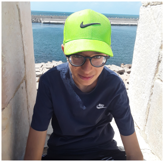

Ce projet consiste à réaliser une page Web pour une compagnie à but non lucratif
qui enseigne l’histoire du Moyen Âge pour permettre aux professeurs de mieux communiquer avec leurs étudiants.
Game of Thrones Conquest a été une inspiration pour son aspect sobre, efficace et concis.
Nous avons donc choisis une palette de couleurs foncées pour accentuer cette direction artistique dans notre projet.
En ce qui concerne nos fonctionnalités, nous avons choisi une navigation simple pour ne pas perdre l’utilisateur.
Le header comporte seulement quatre boutons qui dirigent vers des pages bien spécifiques.
Cette idée nous est venue en tête lorsque nous avons trouvé la clarté des modèles de site disponibles sur Internet.
Cela se reflète même dans notre sélection de polices pour nos paragraphes.
Les titres sont plus stylisés pour les mettre plus en valeur tandis que les petits segments sont plus distincts pour une meilleure lecture.
|  |
Ma tâche consistait à réaliser plusieurs assets visuels à l’aide de Photoshop, |
|
|
Youssef Attia |
|
Je me suis chargé du design du site, notamment du header |
||
|
Eloi Justras |